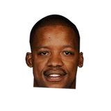
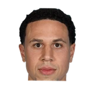

“I love Mike Bibby, I love him, but there’s no way you were going to put me (on the floor) without the basketball in my hands,”
Steve Francis on Mike BibbyToronto Star


Every quote from Steve Francis about Mike Bibby in the archive, newest first. Each one links to its original source.
“I love Mike Bibby, I love him, but there’s no way you were going to put me (on the floor) without the basketball in my hands,”
Francis said in an interview with the Star.
“If I ain’t going to have the basketball in my hands, I can’t wait for slow-ass Mike Bibby. I love him — excuse me — but I can’t wait for him.”